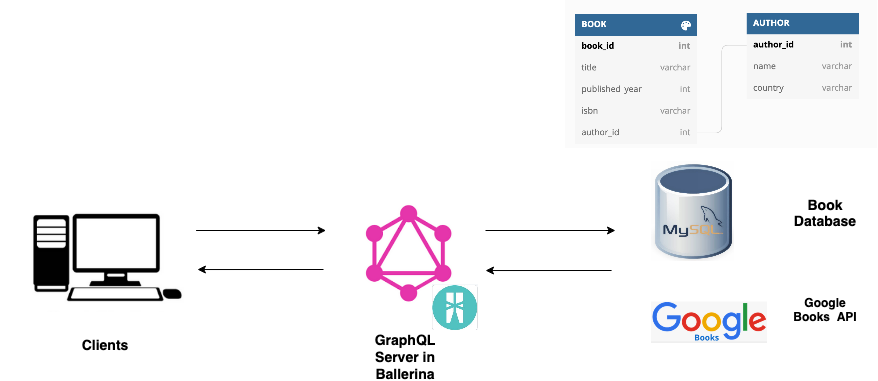
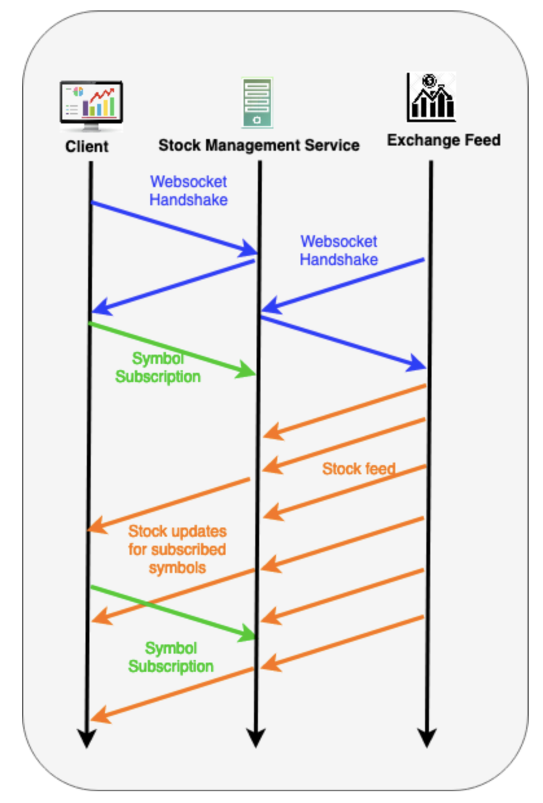
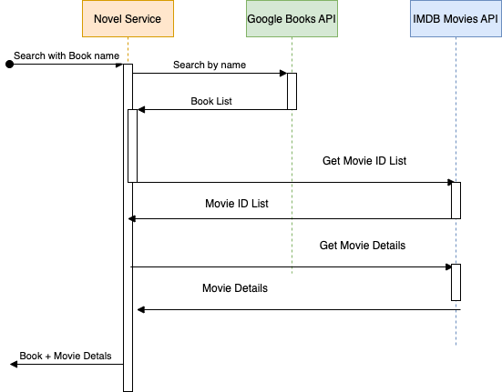

Learn Ballerina
Ballerina is an open-source programming language for the cloud that makes it easier to use, combine, and create network services.
This is a collection of code examples that illustrate various Ballerina concepts and functionalities.
Let’s begin learning Ballerina.
Hello Ballerina
-
Introduction to Ballerina - An introduction to the language.
-
Hello World - A traditional Hello World program.
Ballerina Type System
- Introduction to Type System - An introduction to Ballerina type system.
- Values and Types - Details on Ballerina type system.
Ballerina Best Practices Guide
How-to Code snippets
Use Cases
Articles
Videos and Talks
Introduction to Ballerina
What is Ballerina?
- Ballerina is a general-purpose, open-source programming language.
- It specializes in solving integration/API integration/network interactions & cloud-based problems by providing the right level of language abstractions and tools.
- Ballerina is NOT a JVM language.
- Ballerina is a programming language which is
- compiled : (Compiled languages are converted directly into machine code that the processor can execute. C, C++, Rust, Go are examples. In interpreted Languages, interpreters run through a program line by line and execute each command. PHP, Ruby, Python are examples. )
- type safe
- concurrent
- Ballerina is neither an object oriented language nor a functional one.
- While the language has objects, the development methods are not completely OOP-based.
- Both objects and functions are first class concepts, giving developers the ability to choose the best option based on their requirements.
- It has two implementations.
- jBallerina - written in java to run on top of JVM. This is the first implementation to prove the language.
- nBallerina - Compiled using LLVM, directly to the platform architecture.
What are the unique features of Ballerina?
- Data-oriented - Ballerina makes it easy for the user to transfer, declare, manipulate, process and query the data.
- Network oriented - Ballerina has language constructs/concepts which capture network primitives. (E.g., type system concepts to easily bind data coming via network to language types, service types, client types, etc.)
- Graphical representation - Can easily explain network interactions via sequence diagrams. Each program has both a textual syntax and an equivalent graphical form based on sequence diagrams
- Enterprise-grade application development - Built-in concurrency, Explicit error handling, transactions, full life cycle management concepts including testing, documenting, configurability, dependency management & versioning
- Cloud-Native - Reduces the gap between development to deployment and makes it easier for the developer to write the application and instruct how it should be deployed in the cloud.
Hello World
Main Program
Traditionally the first program we write in any programming language is called a Hello World program – a program that simply outputs the text Hello World to the terminal.
Let's write our first program using Ballerina. Use bal run <file_name> to run the samples.
Sample
//Binds prefix `io` to `ballerina/io` module.
import ballerina/io;
//The main function is the program entry point.
public function main() {
// Print text to the console using `io` module `println` function.
io:println("Hello World");
}
Output
Hello World
Service
The network constructs in the language make it easy to develop network interactions easily. A simple HTTP service is as follows.
Sample
import ballerina/http;
service / on new http:Listener(9090) {
// Handles HTTP GET requests.
resource function get hello() returns string {
return "Hello World!";
}
}
Once the above service is started, invoke the service using the cURL command below using another terminal.
curl http://localhost:9090/hello
Output
Hello World!
Type System Fundamentals
Ballerina is a statically typed language.
That means that every variable has a type that is known at compile time.
Ballerina has structural type system.
A static type checker uses either the names or the structure of the types in order to compare them against other types. Checking against the name is nominal typing and checking against the structure is structural typing.
So in Ballerina, type compatibility is identified by considering the structure of the value rather than just relying on the name of the type.
All mainstream object-oriented languages use nominal subtyping. For ex: Java has no structural subtyping at all; all subtype relationships must be explicitly declared.
Ballerina has semantic subtyping.
The syntax - describes which strings of of characters comprise a valid program. i.e., the form of the language.
The semantics - describes what syntactically valid programs mean, what they do. i.e. the meaning of the language.
Semantic subtyping is an approach for defining subtyping relation based on set-theoretic models, rather than syntactic rules.
Type is a set of values. When is an assignment, x = y legal?
There are at least two possible answers:
-
When
xandyare of equal typesStructural type checking decides that.
-
When
y’s type can be “converted” tox’s type- Once we consider types as set of values, we realize immediately one set may be a subset of another set.
- When the set of values in one type,
T, is a subset of the set of values in another type,U, we say thatTis a subtype ofU. - There are two main approaches for defining the subtyping relation:
- syntactic approach - it is defined by means of a formal system of deduction rules
- semantic approach - It is defined based on set theories. The subtyping relation is defined as inclusion of sets denoting types. Ballerina is using this approach.
Semantic subtyping is most useful for expressing types of tree-structured data, such as JSON.
Ballerina has network aware type system.
Ballerina’s type system is specifically focused on aiding the development of networked and distributed applications. It has constructs that seamlessly map to network programming concepts such as services and network resources.
Langlib Functions
This is a library which provides fundamentnal operations on built-in datatypes. There is a ballerina/lang.T module for each built-in type T and they are automatically imported using T prefix.
We can call Langlib functions in two ways and both produce the same result.
Currently there is Langlib module for following built-in types.
- For Simple Types -
lang.boolean,lang.int,lang.float,lang.decimal - For Structured Types -
lang.array,lang.map,lang.table - For Sequence Types -
lang.string,lang.xml - For Behavioral Types -
lang.object,lang.error,lang.stream,lang.future,lang.typedesc - For common types, provides functions that work on values of more than one basic type -
lang.value
Other than above modules for built-in types Langlib has following modules as well.
- For functions related to language runtime -
lang.runtime - For functions related to transactions -
lang.transaction
Langlib functions can be called in two different ways.
Using method call syntax
import ballerina/io;
public function main() {
// Can call using the conventinent method-call syntax.
string s = "hello World".substring(1, 2);
io:println(s);
}
Using as a module function
import ballerina/io;
public function main() {
// Can call as a langlib module function. No need to import explicitly.
string s = string:substring("Hello World", 1, 2);
io:println(s);
}
Values and Types in Ballerina
Ballerina programs operate on a rich universe of values. This universe of values is partitioned into a number of basic types; every value belongs to exactly one basic type.
A variable has a type, which constrains what values the variable can hold.
Values are of four kinds, each corresponding to a kind of basic type:
- Simple values - which are not constructed from other values;
nil,boolean,int,float,decimal
- Structured values - which contain other values. They are containers for other values, which are called their members.
array,map,record,table,tuple
- Sequence values - which consists of an ordered sequence of zero or more constituent items, where the constituent items belong to the same basic type as the sequence value itself.
string,xml
- Behavioral values- which are not just data
function,object,error,stream,future,typedesc
- Other - which allows some flexibility to define custom types based on the combination of two or more types.
any,anydata,json,byteandunion
Let's learn the Ballerina types in detail.
Simple Basic Types
Ballerina supports following simple basic types.
Integer
- The type
intis an integer data type in a 64 bit signed representation. (i.e. signed integers than can fit into 64 bits using a two's complement representation). This is similar tolongin Java. - Range:
-9,223,372,036,854,775,808and9,223,372,036,854,775,807 - Integer overflow results in a runtime error.
- The integer literals can be declared either in decimal or hexadecimal format (not octal).
- Supported Operators
- Basic arithmetic operators :
+,-,*,/, and% - Comparison operators :
==,!=,<,>,<=,>= - Compound assignment operations :
+=&-= - Bitwise operators :
&,|,^,~,<<and>>
- Basic arithmetic operators :
Sample:
import ballerina/io;
public function main() {
//Integer literal in decimal.
int m = 100;
io:println(m);
// Integer literal in hexadecimal.
int n = 0xFFFF;
io:println(n);
// Use compound assignment operation`+=`.
n += m;
io:println(n);
}
Output
100
65535
65635
Float
- The
floattype corresponds to IEEE 754-2008 64-bit binary (radix 2) floating point numbers. - This is same as
doublein Java. - No implicit conversions between
intandfloatare allowed. Need to use<T>for explicit conversions. - Literal uses the suffix
f.
Sample
import ballerina/io;
public function main() {
float f1 = 1.67;
int i1 = 5;
// Use `<T>` for explicit conversions.
float f2 = f1 + <float>i1;
io:println(f2);
//Use ballerina/lang.float function.
float f3 =f1.round();
io:println(f3);
}
Output
6.67
2.0
Decimal
- The
decimaltype corresponds to a subset of IEEE 754-2008 128-bit decimal (radix 10) floating point numbers. - Represents decimal fractions exactly by preserving precision.
- Literal uses the suffix
d.
Sample
import ballerina/io;
public function main() {
//Float doesn't represent decimal fractions exactly.
float f = 100.10 - 0.01;
io:println(f);
//Decimal represents decimal fractions exactly.
decimal d = 100.10 - 0.01;
io:println(d);
}
Output
100.08999999999999
100.09
Boolean
- The
booleantype has two values:true,false. - The logical operators,
!,||and&&are supported with boolean types. - The
||and&&operators support the same short-circuit behavior as in C.
Sample
import ballerina/io;
public function main() {
boolean b1 = true;
boolean b2 = false;
// Logical operators with boolean.
boolean b3 = !b1;
io:println(b3);
boolean b4 = b1 && b2;
io:println(b4);
boolean b5 = b1 || b2;
io:println(b5);
}
Output
false
false
true
Nil
- The nil type contains a single value, called nil, which is used to represent the absence of any other value.
- This is the only basic type which consists of a single type.
- The nil value is written as
(). - The nil value can also be written
null, for compatibility with JSON; the use ofnullshould be restricted to JSON-related contexts. - Any function that ends without a return statement implicitly returns nil.
- To declare the value of any type
Tas nil :T? x = ();
Elvis Operator
-
The Elvis Operator is represented by a question mark followed by a colon:
?:first operand ?: second operand -
If
first operandisn't nil, then it will be returned. If it is nil, then thesecond operandwill be returned.
Sample
import ballerina/io;
public function main() {
int? i = ();
io:println(i);
json j = null;
io:println(j);
//Elvis Operator
int k = i ?: 0;
io:println(k);
}
Output
0
Sequence Types
Ballerina supports follwoing sequence types.
String
- A string is an sequence of zero or more Unicode characters.
- A string may include Unicode noncharacters, such as 0xFFFE and 0xFFFF.
- The string basic type is inherently immutable.
- A character is represented by a string of length 1.
- There is a built-in subtype
string:Charfor single character strings. - The
[i]expression on a string value points to the character at index i. The index positions on the string type starting with zero. - Supported operators
- Equality Check -
==operator : checks for the same characters. - Comparison operators -
<,<=,=>,>: compalre code points. - Concatenation -
+operator
- Equality Check -
NOTE:
- Unicode is an encoding for textual characters which is able to represent characters from many different languages.
- Each character is represented by a unicode code point.
- A code point is an integer value that uniquely identifies the given character.
- Unicode characters can be encoded using different encodings, like UTF-8 or UTF-16.
- These encodings specify how each character's Unicode code point is encoded, as one or more bytes.
Sample
import ballerina/io;
public function main() {
//Enclosed within double quotes
string s = "Hello World";
io:println(s);
//Index based access
io:println(s[4]);
// Unicode code point using one or more hex digits `\u{H}`.
string symbol = "\u{1F483}";
io:println(symbol);
string:Char c = "!";
io:println(c);
string greeting = s + c;
io:println(greeting);
}
Output
Hello World
o
💃
!
Hello World!
String Template Literal
- String templates allows to embed expressions of simple basic types (except nil).
Sample
import ballerina/io;
public function main() {
string name = "Ballerina";
int count = 2;
// Create a `string` template embedding the `name` variable.
string template = string `Hello ${name}, count is ${count} !!!`;
// Print the defined string value.
io:println(template);
}
Output
Hello Ballerina, count is 2 !!!
XML
Structured Types
Ballerina supports following structured types.
Lists
- A list value is a container that keeps its members in an ordered list.
- The number of members of the list is called the length of the list.
- The key for a member of a list is the integer index representing its position in the list, with the index of the first member being 0.
- A list is iterable.
- Ballerina supports following lists types.
Array
- Arrays are sequential data structures consisting of values of the same type.
T[]is an array ofT. - Arrays are mutable.
- Can access the individual elements of this array using the
[i]notation. Array indexing starts with zero. - The comparison operators -
==or!=: perform a deep comparison. The two arrays are equal if they have the same members in the same order. - Unless the length is specified or inferred from the value, arrays are unbounded by length. That means they can grow up to any length based on the given index.
Sample
import ballerina/io;
public function main() {
//Creates an int array by specifiying an array literal.
//Length is not speicfied, so this will create unbounded array
int[] v = [1, 2, 3];
io:println(v);
io:println("Length of array v:", v.length());
//Arrays can grow up to any length based on the given index.
v[9] = 10;
io:println(v);
io:println("Length of array v:", v.length());
//Length is specified when creating,so it can have only 3 elements maximum.
//If we try to store more than 3 elements it gives errors.
int[3] v2 = [1,2,3];
io:println(v2);
//Access elements by index.
io:println(v2[1]);
//Multi dimensional array.
int[][] v3 = [[1, 2, 3], [10, 20, 30], [5, 6, 7]];
io:println(v3);
io:println(v3.length());
//The `*` is used to infer the array size from array literal.
//Cannot assing more elements than the initial size.
int[*] v4 = [1, 2, 3, 4];
io:println(v4.length());
}
Output
[1,2,3]
Length of array v:3
[1,2,3,0,0,0,0,0,0,10]
Length of array v:10
[1,2,3]
2
[[1,2,3],[10,20,30],[5,6,7]]
3
4
Tuple
- Creates a list of values just like arrays.
- The main difference between arrays and tuples is that an array has only one type applicable to every member of its list, whereas in a tuple type you can individually specify the types for each member.
Sample
import ballerina/io;
public function main() {
// Defines the type of `a` as a pair that consists of an `int` and a `string`.
[int, string] t = [10, "John"];
io:println(t);
// Tuple destructuring:The assignment statement assigns values of the
// tuple on the right to the variables on the left.
int i;
string s;
[i, s] = t;
io:println(i);
io:println(s);
// Invokes a function that returns a tuple.
var [q, r] = divideBy10(6);
io:println("06/10: ", "quotient=", q, " remainder=", r);
// To ignore a value in a tuple, use `_`.
var [q1, _] = divideBy10(57);
io:println("57/10: ", "quotient=", q1);
}
// This function returns a tuple of two integers.
function divideBy10(int d) returns ([int, int]) {
int q = d / 10;
int r = d % 10;
return [q, r];
}
Output
[10,"John"]
10
John
06/10: quotient=0 remainder=6
57/10: quotient=5
Mappings
- A mapping value is a container where each member has a key, which is a string, that uniquely identifies within the mapping.
- We use the term field to mean the member together its key; the name of the field is the key, and the value of the field is that value of the member.
- No two fields in a mapping value can have the same name.
- A mapping is iterable.
- Ballerina supports following mapping types.
Map
- Defined as
map<T>whereTis the map's constraint type. - It is a mapping from keys (that are strings) to values of the type specified as the map’s constraint type.
- The comparison operators -
==or!=: perform a deep comparison. The two maps are equal if they have the same set of keys and the values for each key are equal. - Maps are mutable, and
m["x"]will return the integer value stored in"x", ornilif missing.
Sample
import ballerina/io;
public function main() {
string computedKey = "a" + "b";
// Creates a `map` constrained by the type `int`.
// Computed keys, where the value of the key expression evaluated at the runtime
// can be used within brackets.
map<int> m = {
"x": 100,
"y": 200,
[computedKey] : 500
};
io:println(m);
// Adds a new entry for `z`.
m["z"] = 500;
io:println(m);
// Gets the entry for `x`.
int? v = m["x"];
io:println(v);
//Gets an entry for non existing key.
v = m["a"];
io:println(v);
// Gets value using Langlib function.
int i = m.get("x");
io:println(i);
//Get the list of keys.
string[] keys = m.keys();
io:println(keys);
}
Output
{"x":100,"y":200,"ab":500}
{"x":100,"y":200,"ab":500,"z":500}
100
100
["x","y","ab","z"]
Record
- A record is a collection of fields of a specific type.
- With record types, you have control over what your keys are.
- The keys are named and their types define the types of values that are allowed for the fields.
- Records are mutable.
- Typically a record type is combined with a type definition.
- The name of the type is not significant: a record is just a collection of fields.
- Record equality works same as map equality.
Annonymous record
- Record types can be defined in-line as well. These types do not have a type name associated with them. So the record descriptor itself has to be specified when declaring variables of an annonymous record type.
- Anonymous record types can be used in instances where there is no need to refer to the record type by its name (e.g., records as record or object fields, records as function parameters).
Sample
import ballerina/io;
// Defines a record type named `Student`.
type Student record {
int age;
string name;
};
// Defines a record type named `Person` with an annonymous record inside.
type Person record {
int age;
string name;
record {
string city;
string country;
} address;
};
public function main() {
// Creates a `annonymous record`, specifying values for its fields.
record { int age; string name; } r1 = {
age: 10,
name: "Anne"
};
io:println(r1);
// Creates a `Student` record.
Student s1 = {
age: 10,
name: "Anne"
};
io:println(s1);
//Check whether the two records are equal.
io:println(r1 == s1);
//Access fields
int r1Age = r1.age;
io:println(r1Age);
Person p = {
age: 33,
name: "John",
address: {
city: "Colombo",
country: "LK"
}
};
io:println(p);
}
Output
{"age":10,"name":"Anne"}
{"age":10,"name":"Anne"}
true
10
{"age":33,"name":"John","address":{"city":"Colombo","country":"LK"}}
Open vs Closed Records
Closed Record:- If the set of fields is fixed. The
{|and|}delimiters indicate that the record type allows mapping values, which contain only the described fields. map<T>is same as record{| T...; |}.
- If the set of fields is fixed. The
Open Record:- If the set of fields is not fixed. The
{and}delimiters indicate that in addition to the defined fields, this record type allows additional fields withanydatavalues. The descriptorrecord { }is equivalent torecord {| anydata...; |}. - Record types are by default open: they allow fields other than those specified.
- The type of unspecified fields are anydata. Records are maps. Open records belongs to map
. - Use quoted keys for fields not mentioned in the record type.
- If the set of fields is not fixed. The
Sample
import ballerina/io;
// `Person` type is open record allows additional fields with `anydata` values.
type Person record {
string name;
int age;
};
// `Employee` type is a closed record.
type Employee record {|
string name;
int age;
int id;
|};
// Define an open record with rest fields. All additional fields should be of the type or
// the subtype of the rest field.
type Grades record {|
int maths;
int english;
int science;
string...;
|};
public function main() {
// Create an `Employee` value
Employee e = {
name: "Anne",
age: 34,
id: 567
};
io:println(e);
// Create an `Person` value
Person p1 = {
name: "John",
age: 33
};
io:println(p1);
// Create an `Person` value with additional filed.
Person p2 = {
name: "Mark",
age: 34,
"city": "London"
};
io:println(p2);
// You can assign an `Employee` type value to a `Person`.
Person p3 = e;
io:println(p3);
// You can assign record value to a `map`.
map<anydata> m = e;
io:println(m);
// Create a record value with additional rest fields
Grades g = {
maths: 55,
english: 98,
science: 43,
"art": "A",
"music": "B"
};
io:println(g);
// Can assign record to a map of corresponding type.
map<int|string> m2 = g;
io:println(m2);
}
Output
{"name":"Anne","age":34,"id":567}
{"name":"John","age":33}
{"name":"Mark","age":34,"city":"London"}
{"name":"Anne","age":34,"id":567}
{"name":"Anne","age":34,"id":567}
{"maths":55,"english":98,"science":43,"art":"A","music":"B"}
{"maths":55,"english":98,"science":43,"art":"A","music":"B"}
Optional Fileds
- Fields of a record can be marked as optional.
- These fields can be omitted when creating a record.
- Such fields can be accessed via optional field access (e.g., p?.name) or member access (e.g., p[“name”]) which will both return () if the field is not present in the record.
Sample
import ballerina/io;
type Headers record {
string 'from; // When a keyword is using as field name a single quote is used. This is a required field.
string to = "test@example.com"; // This is a field with defualt value.
string subject?; //This is an optional field.
};
public function main() {
Headers h1 = {
'from: "John"
};
io:println(h1); // Will have values for default field too.
//Use ?. operator to access optional field
string? subject = h1?.subject;
io:println(subject); // Subject is nil here.
Headers h2 = {
'from: "John",
to: "anne@exmample.com",
subject: "test"
};
io:println(h2);
// Can access the fields as follows.
io:println(h1["subject"]);
io:println(h2["subject"]);
}
Output
{"from":"John","to":"test@example.com"}
{"from":"John","to":"anne@exmample.com","subject":"test"}
test
Record Type Reference
- Record type referencing provides a convenient way to copy the fields defined in a record type descriptor to another record type descriptor.
- It is equivalent to explicitly defining those fields in the new type descriptor.
- Type referencing copies the fields including their properties (e.g., type, default value, optional status).
- A record type descriptor can have multiple type references as well as chained-type references.
Sample
import ballerina/io;
type Person record {|
string name;
int age = 25;
|};
type Student record {
*Person; // References the `Person` record.
string studentId;
};
type Grades record {|
int maths;
int english;
int science;
|};
public function main() {
Person p = {name: "John", age: 13};
io:println(p);
Student s1 = {name: "Jane", studentId: "2103X"};
io:println(s1);
Grades g = {
maths: 32,
english: 34,
science: 54
};
// When a spread field is specified, all the fields of the relevant
// mapping value are added to the new record value being created.
Student s2 = {name: "alex", studentId: "4224C", ...g };
io:println(s2);
}
Output
{"name":"John","age":13}
{"studentId":"2103X","name":"Jane","age":25}
{"studentId":"4224C","name":"alex","age":25,"maths":32,"english":34,"science":54}
Table
- A table is a collection of records. Each record represents a row of the table.
- The tables also preserve the order of the rows.
- You can either iterate over the table, item by item, like arrays, or directly point to the item using the associated key.
- The rows are identified by keys.
- table stores the keys as fields in the rows (Similar to SQL based database table where one of the columns is designated as a primary key)
- Key is not limited to string type. You can also have keys belonging to any subtype of plain data, which also includes structured types.
- You can have a table that has a multiple part key spread over several fields.
- Key is immutable. So have to mark as
readonlywhen defining it. A value cannot be assigned to such a field after the record is created.
Sample
import ballerina/io;
type Student record {
readonly string name; // This will be used as key
int age;
};
type Employee record {
readonly string name;
readonly int id;
string country;
decimal salary;
};
type Manager record {
readonly record {
string name;
int id;
} identity;
string country;
decimal salary;
};
public function main() {
//Table with string key
table<Student> key(name) t1 = table [
{name: "John", age: 11},
{name: "Jane", age: 12}
];
io:println(t1);
Student? s = t1["John"];
io:println(s.toString());
Student s2 = {name: "Anne", age: 21};
t1.add(s2);
io:println(t1);
//Table with multiple key fields
table<Employee> key(name, id) t2 = table [
{name: "Mike", id: 1239, country: "UK", salary: 435},
{name: "Mike", id: 4323, country: "US", salary: 510}
];
io:println(t2);
//Table with structured key
table<Manager> key(identity) t3 = table [
{
identity: {
name: "Mike",
id: 1239
},
country: "LK",
salary: 453
},
{
identity: {
name: "Mike",
id: 2342
},
country: "LK",
salary: 453
}
];
Manager m = t3.get({name:"Mike", id: 1239});
io:println(m);
}
Output
[{"name":"John","age":11},{"name":"Jane","age":12}]
{"name":"John","age":11}
[{"name":"John","age":11},{"name":"Jane","age":12},{"name":"Anne","age":21}]
[{"name":"Mike","id":1239,"country":"UK","salary":435},{"name":"Mike","id":4323,"country":"US","salary":510}]
{"identity":{"name":"Mike","id":1239},"country":"LK","salary":453}
Behavioral Types
Ballerina supports following behavioral types.
Object
Why Objects?
- Object encapsulates data with functions that operate on the data.
Introduction
- An object consists of named members,
- field - stores a value
- method - a function that can be invoked on the object
- When a method is invoked on an object, the function can access the object using the
selfvariable. - It is not possible for an object to have a field and a method with the same name.
- Need to use the
newoperator with aclassto get an object. - There are three visibility levels.
- private - only visible within the object and its functions.
- public - visible to any module.
- protected - visible only within the same module.
Init Function
- The
initmethod in the class initializes the object. - Arguments to
neware passed as arguments toinit. - The return type of
initmust be a subtype oferror?.- If
initreturns(): Thenewreturns the newly constructed object. - If
initreturns anerror: Thenewreturns that error. - If
initdoes not specify a return type:- the return type defaults to
(). - Then
newwill never return an error.
- the return type defaults to
- If
Sample
import ballerina/io;
class Customer {
private string firstName;
string lastName;
public int id;
function init(string firstName = "A", string lastName = "B", int id = 0) {
self.firstName = firstName;
self.lastName = lastName;
self.id = id;
}
function getFullName() returns string {
return self.firstName + " " + self.lastName;
}
}
public function main() {
//Calls init function with all parameters
Customer cust1 = new ("Anupama", "Pathirage", 10032);
string fullName = cust1.getFullName(); //Access a method
io:println(fullName);
//Default values are used
Customer cust2 = new;
int id = cust2.id; // Access a public id;
io:println(id);
//This inintialization is useful when the type of the object
//cannot be determined based on nthe context(e.g., when the LHS is var or union)
var cust3 = new Customer("Bill", "Gates", 10031);
string lastName = cust3.lastName;
io:println(lastName);
}
Output
Anupama Pathirage
0
Gates
Stream
WIP
Error
WIP
Typedesc
WIP
Function
WIP
Future
WIP
Other types
Following types do not add to the universe of values. They are just adding new ways to describe subsets of this universe.
Any
- The
anytype consisting of all values other than errors. A value belongs to theanytype if and only if its basic type is not error. - Thus all values belong to the type any|error.
- Equivalent to a union of all non-error basic types.
- Langlib
lang.valuemodule contains functions that apply to multiple basic types. - A variable of type any can be cast to a specific type using the
< >symbol enclosure.
Sample
import ballerina/io;
public function main() {
// Can cast `any` to specific type.
any x = 1.4;
float n = <float>x;
io:println(n);
if (x is decimal) {
io:println("x is decimal");
} else if (x is string) {
io:println("x is string");
} else if (x is float) {
io:println("x is float");
}
}
Output
1.4
x is float
Anydata
- This is used to represent plain data.
- It can be defined as:
() | boolean | int | float | decimal | string | xml | anydata[] | map<anydata> | table<map<anydata>> - It is a subtype of
any. - The
==and!=operators on anydata test for deep equality. - The equality operation also takes care of cycles within anydata structure values.
Sample
import ballerina/io;
public function main() {
anydata[] fArr = [1.34, 3.43];
float f = <float>fArr[0];
io:println(f);
}
Output
1.34
byte
WIP
Json
WIP
union
- A union type describes a value that can be one of several types.
- Why union types?
- Union is useful when the program expects a value to be either many different types. e.g., A parameter to the function or return value can be either
intorfloatetc. - In traditional object-oriented code, we have to abstract over the two types by creating a hierarchy of types to achieve this.
- Union is useful when the program expects a value to be either many different types. e.g., A parameter to the function or return value can be either
T1|T2|T3represents a union of the setsT1,T2andT3.- e.g., The type
int|float|stringcan hold eitherint,floatorstring.
- e.g., The type
- The
isoperator is used to check whether the value belongs to a specific type. The type will be narrowed with the use of theisoperator. Narrowing occurs when Ballerina can deduce a more specific type for a value based on the structure of the code. T1|()can be written asT?as well.
Sample
import ballerina/io;
type Address record {
string city;
string country;
int code;
};
//Instead of writing longer union, it is easy to use a type defintion.
type Location Address|string|int;
public function main() {
int|string|float u1 = "this is a string";
if u1 is int {
io:println("union contains a int value");
} else if u1 is float {
io:println("union contains a float value");
} else { //Type narrowed to string here.
io:println("union contains a string value");
}
//Union types with nil.
int|() i1 = 4;
io:println(i1);
float? f1 = ();
io:println(f1);
//Union type with type descriptors
Location loc = "UK";
io:println(loc);
}
Output
union contains a string value
4
UK
Ballerina Best Practices Guide
Language Best Practices
- Handle nil values
- Generate string by concatenating values
- Handle unions of string constants
- Handle unions of integer constants
- Work with value ranges
Code Style Best Practices
Language Best Practices
- Handle nil values
- Generate string by concatenating values
- Handle unions of string constants
- Handle unions of integer constants
- Work with value ranges
Handling Nil Values
Use Elvis operator.
Elvis operator is a conditional operator that can be used to handle nil values. It evaluates an expression and if the value is nil, executes the second expression. The Elvis operator takes two operands and uses the ?: symbol to form it.
Example 1:
 Bad Code
Bad Code
int? age = ();
int validAge = <int>age;
 Good Code
Good Code
int? age = ();
int validAge = age ?: 0;
Example 2:
Bad Code
string? name = ();
string validName = name.toString();
Good Code
string? name = ();
string validName = name ?: "";
Example 3:
Bad Code
function getUsers() returns string[]|error {
string[]? users = check httpClient->get("/users");
if users is string[] {
return users;
}
return [];
}
Good Code
function getUsers() returns string[]|error {
string[]? users = check httpClient->get("/users");
return users ?: [];
}
Generate string by concatenating values
Use string backtick template.
A backtick template is composed of a tag followed by a backtick string, enclosed within the backtick notation, where you can have expressions that are enclosed in ${...}.
Bad Code
int age = 10;
string name = "Anne";
log:printInfo("Child name is " + name + " and age is " + age.toString());
- Need to convert non string values to strings.
- Need to handle spaces in the text properly along with the
+.
Good Code
int age = 10;
string name = "Anne";
log:printInfo(string `Child name is ${name} and age is ${age}`);
Handle unions of string constants
Use enums, unions of singletons or unions of constants. Enum seems to be a better option out of those three.
Let's say we have a string variable named deparment which can only be Finance, Engineering or HR.
Bad Code
type Employee record {|
string name;
string department;
|};
Employee e = {name: "John Doe", department: "HR"};
- No idea what are the possible department types
- Users can specify any string value as the department. It is syntactically correct but incorrect from the scenario point of view.
Good Code
Option 1: Usage of enums
enum Department {
Finance,
Engineering,
HR
}
type Employee record {|
string name;
Department department;
|};
Employee e = {name: "John Doe", department: HR};
Note: Ballerina doesn’t allow numeric enums.
Option 2: Unions of singletons
type Department "Finance"|"Engineering"|"HR";
type Employee record {|
string name;
Department department;
|};
Employee e = {name: "John Doe", department: "HR"};
Option 3: Unions of constants
const Eng = "Engineering";
const Fin = "Finance";
const HR = "HR";
type Department Eng|Fin|HR;
type Employee record {|
string name;
Department department;
|};
Employee e = {name: "John Doe", department: HR};
Conclusion
- In all three approaches, the User can’t specify anything other than specified values which is good.
- Option 1: Enums is a better choice if we consider the readability and simplicity of the code.
Handle unions of integer constants
Use unions of singletons or unions of constants. Unions of constants seems to be a better option out of those three.
Let's say we have a int variable named priority which can only be 1, 2 or 3 where 1 is the highest priority.
Bad Code
type Issue record {|
string title;
int priority;
|};
Issue issue = {title: "Incorrect input parameters", priority: 1};
- No idea what are the possible priority values
- By looking at the issue value, we can’t get a sense of priority level. Whether priority 1 means the highest priority or lowest priority.
- Users can specify any int value as the priority. It is syntactically correct but incorrect from the scenario point of view.
Good Code
Option 1:Unions of singletons
type Priority 1|2|3;
type Issue record {|
string title;
Priority priority;
|};
Issue issue = {title: "Incorrect input parameters", priority: 1};
Option 2: Unions of constants
const HIGH = 1;
const MEDIUM = 2;
const LOW = 3;
type Priority HIGH|MEDIUM|LOW;
type Issue record {|
string title;
Priority priority;
|};
Issue issue = {title: "Incorrect input parameters", priority: HIGH};
Conclusion
- Both Option 1 and 2 restrict the users from having arbitrary integer values for priority.
- But in option 1, by looking at the priority value, we can’t understand whether 1 means high or low.
- So Option 2: Unions of constants is the best option.
Work with value ranges
Use range expressions.
Bad Code
function processData(string[] data) {
int index = 0;
foreach var val in data {
index += 1;
if (index == 1) {
continue; // Need to skip the first value in array
}
io:println(val);
}
}
- Need to maintain a seperate index.
- Need to check whether value equals to one in each iteration.
Good Code
function processData(string[] data) {
foreach int lineNo in 1 ..< data.length() {
io:println(data[lineNo]);
}
}
Code Style Best Practices
Use early returns
Use early returns to avoid nested if conditions. Then the code will become more readable and maintainable.
Note: This is not a Ballerina language specific thing, but can simplify the code a lot.
Bad Code
Good Code
Ballerina How To Snippets
This is a collection of Ballerina code snippets for quick reference.
- Download a file from URL using Ballerina
- Validating email address using Regex in Ballerina
- Upload CSV files to Ballerina Service
- Remove duplicate values of string array
Download a file from URL using Ballerina
This example shows how to download a small file from the web on to your local machine.
Sample
import ballerina/io;
import ballerina/http;
function downloadFile(string filePath, string url) returns error? {
http:Client httpEP = check new (url);
http:Response e = check httpEP->get("");
return io:fileWriteBytes(filePath, check e.getBinaryPayload());
}
public function main() {
error? status = downloadFile("../img/logo.png", "https://ballerina.io/img/branding/ballerina_logo_dgrey_png.png");
if (status is error) {
io:println(status);
} else {
io:println("File downloaded successfully");
}
}
Output
File downloaded successfully
Validate email address using Regex in Ballerina
This example shows how to download a small file from the web on to your local machine.
Sample
import ballerina/io;
import ballerina/regex;
public function main() {
string email = "hello$example.com";
io:println(email + " is valid:", isValid(email));
email = "hello@abc.com";
io:println(email + " is valid:", isValid(email));
}
function isValid(string email) returns boolean {
if email.length() < 3 || email.length() > 254 {
return false;
}
return regex:matches(email, "^[a-zA-Z0-9.!#$%&'*+\\/=?^_`{|}~-]+@[a-zA-Z0-9](?:[a-zA-Z0-9-]{0,61}[a-zA-Z0-9])?(?:\\.[a-zA-Z0-9](?:[a-zA-Z0-9-]{0,61}[a-zA-Z0-9])?)*$");
}
Output
hello$example.com is valid:false
hello@abc.com is valid:true
Upload CSV files to Ballerina Service
This example shows how to process user uploaded CSV files to a service written in Ballerina.
Sample
import ballerina/http;
import ballerina/mime;
import ballerina/io;
type Employee record {|
string name;
int age;
decimal salary;
boolean isMarried;
|};
// Service which is processing CSV file data
service /employees on new http:Listener(9095) {
// Accepts a CSV file in the request payload and returns the data set after extracting
resource function post upload(http:Request request) returns http:Response|error {
http:Response response = new;
string[][] csvLines = check extractCSVLines(request);
Employee[] employees = check createEmployee(csvLines);
//Returns extracted data in the response. Or can do whatever processing as needed.
response.setPayload(employees);
return response;
}
}
//Read the incoming data in bytes and extracts CSV data
function extractCSVLines(http:Request request) returns string[][]|error {
var bodyParts = request.getBodyParts();
if (bodyParts is mime:Entity[]) {
string[][] csvLines = [];
foreach var bodyPart in bodyParts {
var mediaType = mime:getMediaType(bodyPart.getContentType());
if (mediaType is mime:MediaType) {
byte[] payload = check bodyPart.getByteArray();
io:ReadableByteChannel readableByteChannel = check io:createReadableChannel(payload);
io:ReadableCharacterChannel readableCharacterChannel = new (readableByteChannel, "UTF-8");
io:ReadableCSVChannel readableCSVChannel = new io:ReadableCSVChannel(readableCharacterChannel, ",", 1);
csvLines = check channelReadCsv(readableCSVChannel);
} else {
return error("Invalid media type!");
}
}
return csvLines;
} else {
return error("Error in decoding multiparts!");
}
}
//Read the io:ReadableCSVChannel and construct string[][] which represents CSV data
function channelReadCsv(io:ReadableCSVChannel readableCSVChannel) returns string[][]|error {
string[][] results = [];
int i = 0;
while readableCSVChannel.hasNext() {
var records = readableCSVChannel.getNext();
if records is string[] {
results[i] = records;
i += 1;
} else if records is error {
check readableCSVChannel.close();
return records;
}
}
check readableCSVChannel.close();
return results;
}
//Construct record values
function createEmployee(string[][] inputCSVData) returns Employee[]|error {
Employee[] employees = [];
foreach var line in inputCSVData {
Employee employee = {
name: line[0],
age: check int:fromString(line[1].trim()),
salary: check decimal:fromString(line[2].trim()),
isMarried: check boolean:fromString(line[3].trim())
};
employees.push(employee);
}
return employees;
}
Sample CSV File
Name,Age,Salary,IsMarried
John,25,8000,FALSE
Anne,34,9000,TRUE
Output
Sample Request
curl -F 'img_avatar=@/home/test/EmployeeList.csv' http://localhost:9095/employees/upload/
Sample Response
[{"name":"John","age":25,"salary":8000,"isMarried":false},{"name":"Anne","age":34,"salary":9000,"isMarried":true}]
Remove duplicate values of string array
This sample shows how to remove duplicate values in a given string array.
Sample
import ballerina/io;
// Method 1
function getUniqueValues(string[] names) returns string[] {
string[] uniqueNames = [];
foreach string name in names {
if uniqueNames.indexOf(name) is () {
uniqueNames.push(name);
}
}
return uniqueNames;
}
//Method 2
function getUniqueValuesUsingMap(string[] names) returns string[] {
map<()> mapNames = {};
foreach var name in names {
mapNames[name] = ();
}
return mapNames.keys();
}
public function main() {
string[] duplicatedStrings = ["Anne", "Jane", "John", "Jane", "Ivan", "Peter", "Anne"];
//Using Method 1
io:println(getUniqueValues(duplicatedStrings));
//Using Method 2
io:println(getUniqueValuesUsingMap(duplicatedStrings));
}
Output
["Anne","Jane","John","Ivan","Peter"]
["Anne","Jane","John","Ivan","Peter"]
Usecases
- Ballerina GraphQL with multiple datasources - Bookstore example using Ballerina with MySQL DB and Google Books API as datasources.
- Ballerina WebSocket for real-time stock updates - Stock data management service, exchange and client using WebSocket.
- Ballerina HTTP Service for book and movie search - HTTP service to search book and movie data
Ballerina GraphQL with multiple datasources
Source code
The full source code for the scenario can be found in ballerina-scenarios repo.
Sample use case
The data source to the GraphQL server can be anything such as a database, API, or service that holds data. Also, GraphQL can interact with any combination of data sources. In this use case, let’s see how we can implement a GraphQL server using the Ballerina language to expose data in the MySQL database and data retrieved via another API call.
The MySQL database holds data about a book store, and it has book data and author data. Additional information related to Books is retrieved using Google Books API. Clients of the book store can do the following operations via the GraphQL server.
- Retrieve the details of all the books
- Retrieve the details of the book by providing the book name
- Add new books to the database
The information sources for the above operations are as follows.
- Title, published year, ISBN number, author name, author country - Retrieved from DB
- Average rating and rating count - Retrieved from Google Books API filtered using ISBN number of the book.
E.g.: https://www.googleapis.com/books/v1/volumes?q=isbn:9781101042472

Set up the Database
Create the sample MySQL database and populate data with the data.sql script as follows.
mysql -uroot -p < /path/to/data.sql
Run the code
Execute bal run command within the bookstore project folder.
Test the service
To call the GraphQL server, we need to use a client. We can do this from the command line with curl by sending an HTTP POST request to the endpoint, passing the GraphQL query as the query field in a JSON payload. If you prefer to use a graphical user interface, you can use clients such as GraphiQL or Altair.
For all the requests the endpoint is : http://localhost:4000/bookstore
Sample Request 1: Get the titles of all books
GraphQL query:
{allBooks {title}}
Response:
{
"data": {
"allBooks": [
{ "title": "Pride and Prejudice" },
{ "title": "Sense and Sensibility" },
{ "title": "Emma" },
{ "title": "War and Peace" },
{ "title": "Anna Karenina" }
]
}
}
CURL command to request the same: curl -X POST -H "Content-type: application/json" -d '{ "query": "{allBooks {title}}" }' 'http://localhost:4000/bookstore'
Sample Request 2: Get more details of all books
This is where the true power of GraphQL comes in. Users can request the exact information they need in the format they prefer without having different endpoints, but just by changing the query.
GraphQL query :
{allBooks {title, author{name}, reviews{ratingsCount, averageRating}}}
Response :
{
"data": {
"allBooks": [
{
"title": "Pride and Prejudice",
"author": {
"name": "Jane Austen"
},
"reviews": {
"ratingsCount": 1,
"averageRating": 5
}
},
{
"title": "Sense and Sensibility",
"author": {
"name": "Jane Austen"
},
"reviews": {
"ratingsCount": 3,
"averageRating": 4
}
},
{
"title": "Emma",
"author": {
"name": "Jane Austen"
},
"reviews": {
"ratingsCount": null,
"averageRating": null
}
},
{
"title": "War and Peace",
"author": {
"name": "Leo Tolstoy"
},
"reviews": {
"ratingsCount": 5,
"averageRating": 4
}
},
{
"title": "Anna Karenina",
"author": {
"name": "Leo Tolstoy"
},
"reviews": {
"ratingsCount": 1,
"averageRating": 4
}
}
]
}
}
CURL command to send the same request:
curl -X POST -H "Content-type: application/json" -d '{ "query": "{allBooks {title, author{name}, reviews{ratingsCount, averageRating}}}" }' 'http://localhost:4000/bookstore'
Sample Request 3: Get details of books with input parameter
GraphQL Query:
{bookByName(title: "Emma") {title, published_year}}
Response:
{ "data": { "bookByName": [{ "title": "Emma", "published_year": 1815 }] } }
CURL Command to send the same request:
curl -X POST -H "Content-type: application/json" -d '{ "query": "{bookByName(title: \"Emma\") {title, published_year}}" }' 'http://localhost:4000/bookstore'
Sample Request 4: Mutation to insert data into the database
GraphQL Query:
mutation {addBook(authorName: "J. K. Rowling", authorCountry: "United Kingdom", title: "Harry Potter", published_year: 2007, isbn: "9781683836223")}
Response:
{
"data": {
"addBook": 6
}
}
CURL Command to send the same request:
curl -X POST -H "Content-type: application/json" -d '{ "query": "mutation {addBook(authorName: \"J. K. Rowling\", authorCountry: \"United Kingdom\", title: \"Harry Potter\", published_year: 2007, isbn: \"9781683836223\")}" }' 'http://localhost:4000/bookstore'
Ballerina WebSocket for real-time stock updates
Source code
The full source code for the scenario can be found in ballerina-scenarios repo.
Sample Use case
The WebSocket-based stock management server is getting stock data feed via WebSocket-based connections from different exchanges. The client applications will subscribe to the preferred stock symbols by registering those symbols with the stock management server.
When the stock management server receives updates to the subscribed symbols, it will broadcast the data to the subscribed clients using a WebSocket connection.

Running the applications
Let's run the three applications using the below commands in the following order.
bal run ws_stock_mgt_server.bal.
bal run client.bal
bal run exchange.bal
Ballerina HTTP Service for book and movie search
Source code
The full source code for the scenario can be found in ballerina-scenarios repo.
Sample Use case
Refer to the scenario below.

External Calls
Google Books API
https://www.googleapis.com/books/v1/volumes?q=intitle:war%20and%20peace
IMDB Movie API
https://imdb-api.com/en/API/SearchMovie/k_mhb0408y/war%20and%20peace
https://imdb-api.com/en/API/Trailer/k_mhb0408y/tt3910804
Test URL
curl "localhost:9090/books/search?name=war%20and%20peace" | jq
Articles and Blogs
- Stackoverflow - Upload CSV files to Ballerina Service
- Stackoverflow - How to download a file from URL using Ballerina
- InfoQ - Using GraphQL and Ballerina with Multiple Data Sources
- Dzone - Real-Time Stock Data Updates with WebSockets using Ballerina
- Dzone - Event-Driven APIs With Webhook and WebSub
- Dzone - Quickstart OpenAPI With Ballerina
- Medium - Introduction to gRPC on Ballerina
- Medium - SQL Injection — Introduction with Ballerina
- Medium - Managing data using Ballerina vs Go
- Dzone - Data Integration With Ballerina
- Dzone - Introduction to Data Integration With Ballerina
- Medium - Introduction to Ballerina Tables
- Medium - Connect to your data with Ballerina
- Medium - Insert batch of data to DB using Ballerina
- Medium - Ballerina JDBC Client — Performing DB Operations
- Medium - Ballerina JDBC Client— Connecting to DB
Videos and talks
Videos
- Get Started With Ballerina
- Create Your First Service With Ballerina
- How To Use Ballerina Tool
- Structuring Ballerina Code
- Use Ballerina VSCode Extension
- Download a file using ballerina
- Download a large file using Ballerina